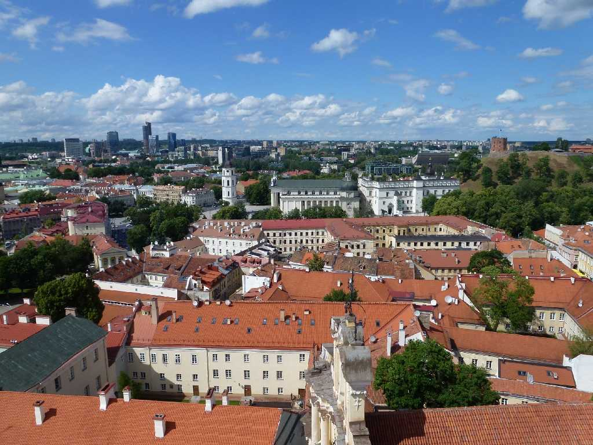
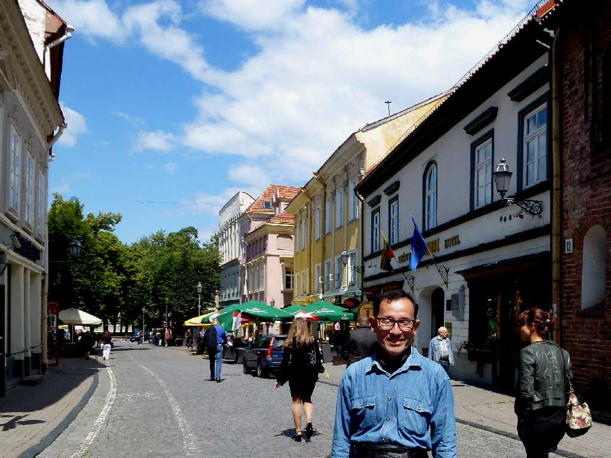

Vilnius Historic Center from St, Johnes Church in the University of Vilnius
１３世紀にリトアニア大公国のミンダウカス王が居城を築いた後１４世紀にはゲディミナスによりベラルーシやウクライナ等に領土を広げゲディミナス朝の首都機能を果たした

June 25 2012 Historic Center Vilnius
バルト三国１,５００kmバスの旅はここビルニュスから出発しリガを通りエストニアのタリンまで走る